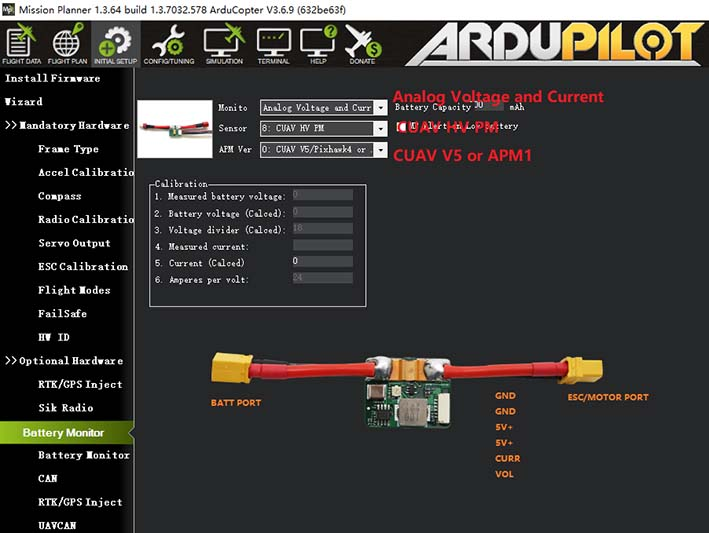

CUAV HV PM (High voltage power module)¶
The CUAV HV PM module is a new high voltage voltage power module independently developed by CUAV with the following features:
High voltage input: 10v-60v (3S~14S battery)
Highly accurate battery monitor: * voltage detection accuracy: +-0.1v * current detection accuracy: +-0.4A
Bec (5v) max current: 5A
Max current measurement: 60A
Max allowable output current(ESC/MOTOR PORT): 60A
Enabling the HV PM¶
{kind=link}
Set Monitor：Anglog Voltage and Current
Set Sensor：CUAV HV PM
Set APM Ver：CUAV v5 or Pixhawk4(for V5 series flight control selects CUAV v5)
Click on other interface to write parameters
Restart Mission Planner and autopilot
You can also enable it by setting the following parameters (shown for first battery monitor).
BATT_MONITOR to 4 to Set to analog voltage and current.
Restart Mission Planner and autopilot
BATT_VOLT_PIN to 0 (for CUAV V5).
BATT_CURR_PIN to 1 (for CUAV V5).
BATT_VOLT_MULT to 18
BATT_AMP_PERVLT to 24
Restart Mission Planner and autopilot